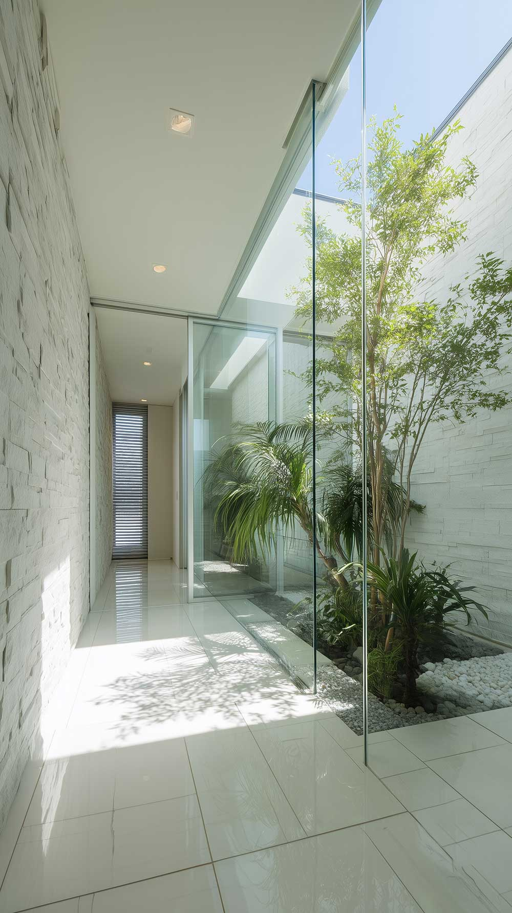
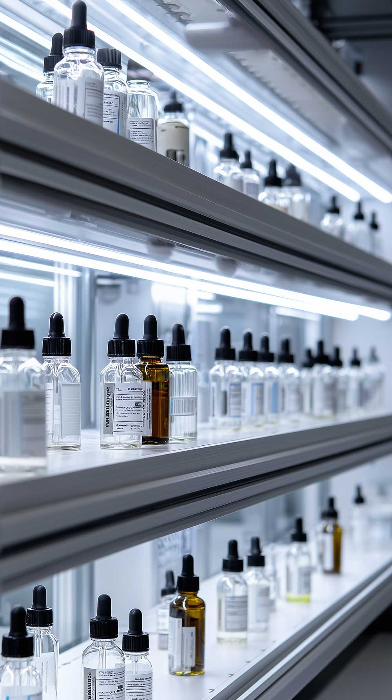

スタッフ紹介Staff
このブロックは「.list-staff」のスタイルを使用しています。
cssフォルダのstyle.cssを開き、「.list-staff」で検索すると該当ブロックが出てきます。説明コメントも入っていますので、必要に応じて調整してみて下さい。

院長・歯科医師
山田 花子Hanako Yamada
患者様お一人おひとりに寄り添い、丁寧で分かりやすい治療を心がけています。お口のお悩み、お気軽にご相談ください。
歯科衛生士
佐藤 美咲Misaki Sato
予防ケアが専門です。お口の健康を長く保つためのブラッシング指導やクリーニングを担当しています。

歯科衛生士
鈴木 あかりAkari Suzuki
小児の診療を主に担当。お子さまが怖がらず通えるよう、やさしい声かけと丁寧なケアを心がけています。